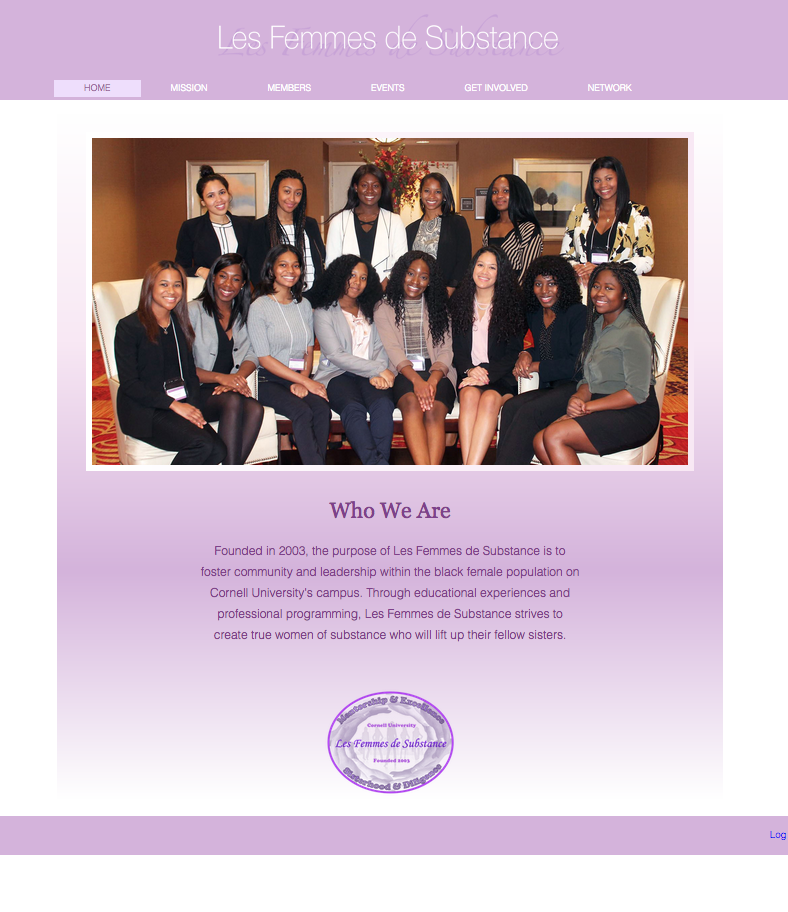
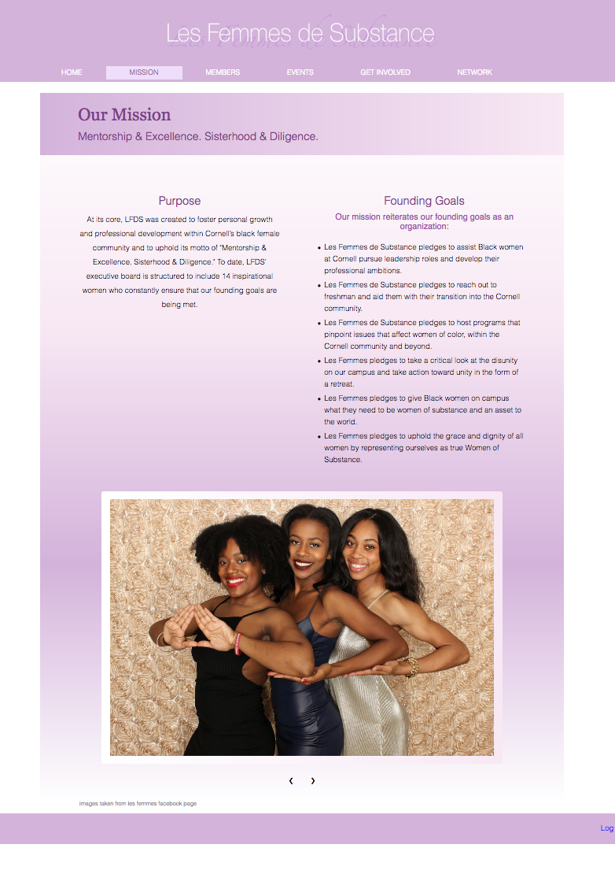

Les Femmes de Substance



Seek to understand a given problem that can be solved through technological developments
Approach the topic from all angles, conduct initial user interviews, and define a target audience. Develop user personas based on interviews.
List out all potential ideas. Begin sketching out site frameworks and content, then iterate over with increasingly detailed wireframes.
Find ideal user group and conduct user interviews with wireframes. Give structured tasks to complete and observe responses, facial expressions, and feedback
Create a higher-fidelity prototype or web framework based on the user interviews
Conduct Nielson heuristic evaluations on another set of user interviews with the new models
Re-design based on heuristic evaluations and additional user interviews
Cornell University, Class of 2019
Information Science Major, Business Minor
Concentrations: Interactive Technologies, User Experience, Digital Production
Led 100% of user testing for internal Learning & Development website used by 77,000 employees
Conducted extensive heuristic evaluations of L&D catalog website leading to over 30 site improvements
Coded 2 iterations of prototype site based on wireframes derived from user research to guide site development
Produced Food & Beverage Department operations manual to be used by about 10,000 F&B employees
Directed intern committee of 7 in organizing bonding activities for 34 interns and designed 10-week yearbook
Managed brand image development for mobile app startup aspiring to boost church engagement
Conducted market research on 15 competitors to devise competitive advantage through an intuitive interface
Iterated through 3 cycles of wireframe development and testing to guide application development
Collaborated with 4 other department heads to analyze and transition to new branding
Conducted brand analysis and analyzed competitor data to strengthen branding for software company
Strategized with company executives to revitalize website and grow brand presence in 2 new social media outlets
Improved social media touchpoints with clients and grew account following by 90%
Designed marketing materials for Fortune 500 clients in hospitality, technology, and music
Made 100% of spending decisions to boost engagement and finance all team functions
Consulted with 4 executive board members to arrange performances, marketing strategies, and social activities
Managed over $8,000 in team funds and organized $2,000 budgets for 2 performances with audience sizes of 500+
Sold 547 tickets with about 90% attendance rate to “Spring into Motion,” a college-wide showcase
Developed media presence for organization that publishes research papers submitted by renowned universities
Redesigned user-friendly website to increase brand presence and outreach
Managed social media presence and marketed organization to grow club membership by 33%
Collaborated with other board members to plan galas, social activities, and outreach strategies
Collaborated with national and local businesses
Attended lecture series and practiced case studies to learn and practice effective marketing strategies
Developed promotional strategies for Johnson Business School’s new Entrepreneurship minor
Conducted market research on 5 food delivery outlets for Five Guys as local delivery system